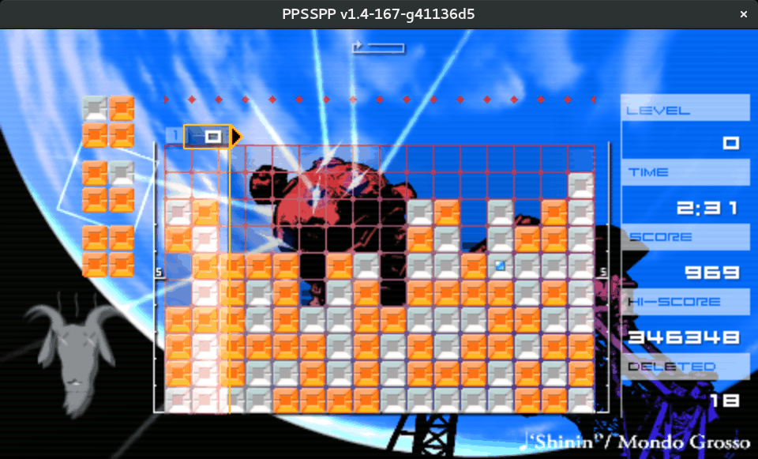

PPSSPP

Cambiando un poco de enfoque me dispuse a jugar un rato con el emulador que mas me gusta PPSSPP, que… sirve para jugar roms de psp, este ultimo es un cacharro que cuando salio alucinaba por tener, pero como siempre he sido pobre de mente y economia nunca tuve, ya mas tarde me pasaron uno para que le pusiera algunos jugos, pero me parecio un cacharro de mala calidad
bueno, dejando la anecdota de lado, PPSSPP, es de lejos el emulador mas bonito y atractivo que he visto jamas ensima es software libre!

Tiene una tienda de Homebrew, aunque todo es gratis
, admite mandos o al
menos el logitech F710 no tiene problemas, por supuesto los controles y atajos
son configurables, viene en español y esta muy bien optimisado. Corre hasta en
equipos androide, claro, hay que ser realistas y darle al menos un i3 para que
se desempeñe como es debido.
En mi caso con un celeron 847 de dos nucleos a 1.1GHZ, fluido va… aunque hay que aclarar que lo unico que juego (y fui younqui un rato) es el Lumines (I y II)

es algo asi como un tetris psicotropico con una cabra (u otro avatar) pulsante del lado izquierdo, la gracia es unir cuatro o mas elementos del mismo color, hacer combos de uniones o despejar uno o ambos colores de la pantalla por la eternidad, todo mientras resives ataques de distraccion visual no aptos para epilepticos (la puntuacion mas alta que he alcanzado es de 346348 puntos, algo asi como dos horas de juego
Pero bueno no todo es felicidad y vicio, queria probar algo mas plataformero y me encontre el MegaMan Maverick X Hunter, pero el ppsspp se colgaba, asi que supuse que serian cosas del programa, y toco probar con una version nueva, pues la ultima ya tenia como un año que la habia compilado
Compilar
El codigo fuente esta en github, al parecer ya incluye todas las dependencias necesarias, exepto o sdl2 o algo de qt (ya sera al gusto de compilador) (Nota: si en el proceso de compilacion te dice que hace falta una libreria la buscas y la instalas)
git clone https://github.com/hrydgard/ppsspp.git
cd ppsspp
git submodule update --init --recursive
./b.sh
cd build
y ya esta, en la carpeta build encontraras un ejecutable PPSSPP.
Un click o un ./PPSSPP + unas roms y felicidad en un binario que incluye todas
sus librerias para correr de forma autonoma, lo lleves a donde lleves… o asi
fue la ultima ves que compile.
En la version mas actual directa del repositorio, me ha salido esto
CMake Error: Cannot determine link language for target "armips".
CMake Error: CMake can not determine linker language for target: armips
-- Generating done
-- Build files have been written to: /home/nasciiboy/apt/vg-dev/emu/ppsspp/ppsspp-git/build
ni idea para que necesite el armips, tampoco encontre mucho al respecto, asi
que baje un binario precompilado desde su pagina
Buscar Binario desde La pagina oficial
antes de hacer esto, mejor revisa si esta en los repositorios oficiales, hasta donde se no lo incluien ni debian ni freidora
http://www.ppsspp.org/downloads.html
descomprimes el binario y te llebas la carpeta a donde mejor te convenga
Homebrew
Como futuro rey de los piratas programadores, mi sueño es encontrar el
One Code, un tesoro compuesto por libros de programacion en español de cualquier
tema imaginable, bien desarrollados, entendibles por paletos como yo y en un
formato molon.
Para mi desgracia, hasta el dia de hoy no he dado ni con un puñetero libro para programar videojuegos descente, menos aun para programar en esos sistemas dedicados en hardware y software al ocio electronico (mejor conosidos como consolas) que exponga el tema. Oh lo que daria por una biblia de programacion para el nes (en ensablador) o el snes, o el gameboy y quisa para el psp o la n64
Mietras tanto, evado el asunto consiguiendo roms en el unico sistema de distribucion libre, los torrents!
Ya para terminar, al parecer el problema que tenia la version anterior con el MegaMan era la reproduccion de videos, asunto solucionado en versiones recientes, pero mi procesador no lo mueve fluido, ni el Gran Turismo, pero el Sega Rally va fino, fino
O, del Homebrew solo recomendar Attack Of the Mutants y el siempre incombustible Cave Story, aunque este mejor jugar el port nativo nxEngine